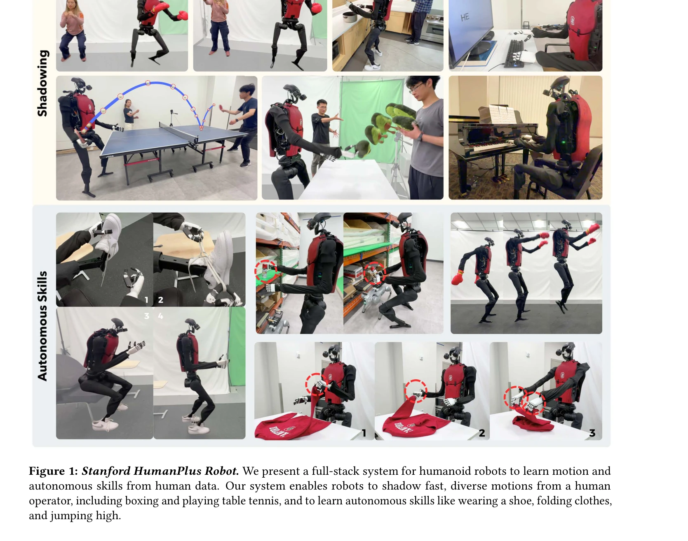
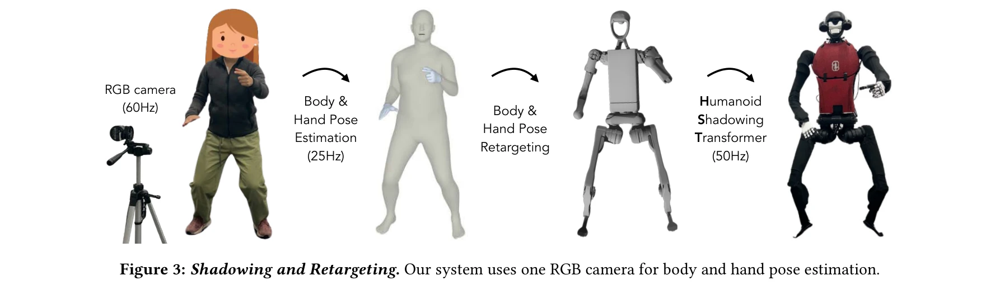

저자: Zipeng Fu, Qingqing Zhao, Qi Wu, Gordon Wetzstein, Chelsea Finn | 날짜: 2024-06-15 | URL: https://arxiv.org/abs/2406.10454

Figure 1: Stanford HumanPlus Robot. We present a full-stack system for humanoid robots to learn motion and
휴머노이드 로봇이 인간의 모션 데이터와 RGB 카메라만으로 실시간 shadowing 및 자율 skill 학습을 수행하는 풀스택 시스템을 제시한다.
Figure 1: Stanford HumanPlus Robot. We present a full-stack system for humanoid robots to learn motion and

Figure 3: Shadowing and Retargeting. Our system uses one RGB camera for body and hand pose estimation.
총평: 이 논문은 RGB 카메라 기반 실시간 shadowing과 효율적 imitation learning을 통합하여 휴머노이드 로봇의 자율 skill 습득을 실현한 실질적 기여를 보여준다. 기존 고가 teleoperation 시스템 대체와 대규모 인간 데이터 활용이라는 측면에서 휴머노이드 개발의 새로운 방향을 제시한다.